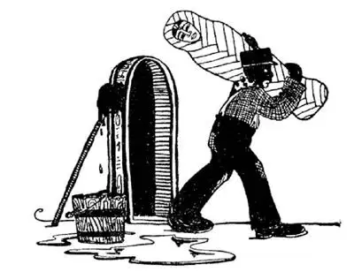
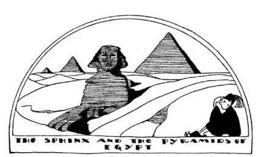

61
Man-Made Mountains
人造山

ALL the continents begin with an “A” except one.
Asia is the largest continent.
Africa is the next largest.
But Africa was an “In-the-Way” continent. It was in the way of those who wanted to get to Asia. Every one wanted to get around Africa. No one wanted to get to it. Sailors had been shipwrecked on its shores, but few lived to tell the tale of jungles of wild animals and wild black men. Africa was called the Dark Continent because no one knew much about it or wanted to know about it. Like children afraid of the dark, people were afraid of the Dark Continent. On one edge—along the Mediterranean Sea—white men lived, but south of that edge was a great desert that men feared to cross, and south of that wild black men and wild animals. But in one corner of Africa, the corner near Asia and along the Red Sea, white people had been living and mighty kings had been ruling for thousands of years. This corner country is called Egypt.
Have you ever seen a man one hundred years old? I have seen a man five thousands years old—a real man, a little dried up man who was once a mighty ruler of Egypt. He did not want to “turn to dust” when he died, for how then could he rise again from the dead at the Day of Judgment? So he left orders that he should be pickled and wrapped in bandages and a mountain of stone placed over his body to make sure it would not be touched or moved away. In fact, he built the mountain of stone before he died, to make sure of that part of it. But you can never tell what will happen to you after you are dead, so in spite of the mountain of stone, here he is, a ruler of Egypt whom millions obeyed, now in a case in a museum where any one can stare at him, and the janitor dusts his face and moves him out of the way to sweep the floor. A pickled man is called a mummy, and the mummies of many such rulers of Egypt are now in museums.

Once a king of Egypt now in a Museum and the janitor moves him out of the way to clean the floor
过去的埃及国王现在仍存放在博物馆里，勤杂工在打扫地板的时候暂时将他搬走
One of the Seven Wonders of the World was these mountains of stone called pyramids, which the kings built when they were alive, to be tombs for themselves when dead. Each king tried to build a bigger and better pyramid than the king before him. The largest pyramid was built by a king called Cheops, who died nearly three thousand years before Christ was born. It is said that it took one hundred thousand people ten years to build his tomb.
The outsides of the pyramids used to be smooth slanting walls, but people have taken out stone from the sides to build other buildings, so that now the outsides of the pyramids are as rough as piled-up heaps of stones and you can climb from stone to stone on up to the top. Cheops’s tomb and most of the other tombs or pyramids are of solid rock, with just a small room in the center, which was left for the body of the king and the things he had used when he was alive. The old Egyptians thought they must keep their furniture and other things around them, so that on the Judgment Day, when they should be awakened from their long sleep, they would be all ready to go on housekeeping. After Cheops’s body was put into the tomb the passageway leading to it was filled up tight with stone, and all traces of the opening were hidden so that no one could find it and steal his body away. But, nevertheless, some one did find it out, stole his mummy and all the things that had been left there for his use in the next World, and if his soul ever returns it will find nobody.
The ancient Egyptians worshiped fairy-tale gods and even animals. Bulls and beetles were sacred and they made mummies of them. Now, however, nine out of every ten people in Egypt are Mohammedans and, instead of building pyramids, they build beautiful mosques.
Close by these big pyramids is the Sphinx, a huge stone figure with the body of a lion and the head of one of the Egyptian kings. In Greece a sphinx was supposed to be an animal with a woman’s head that sat by the road and asked passers-by this riddle: “What is it that goes on four feet in the morning, two at midday, and three at night?” If the traveler couldn’t tell the answer the sphinx devoured him. At last some one answered, “Man, because he crawls on all fours in the morning of his life, then walks on two feet, and finally on two feet and a cane.” The Greek sphinx was a “she”. But the Egyptian sphinx is a “he.” He has a man’s head and he asked no riddles. He was a god of the sun.

斯芬克斯像和埃及金字塔
They were called one of the Seven Wonders of the World
它们被称为“世界七大奇观”之一
The Sphinx and pyramids are on the bank of the one and only great river of Egypt, called the Nile. Have you ever heard of crocodile tears? The crocodile is a big alligator-like animal that lives in the Nile, and people used to say that he would catch little Egyptian boys and while he was eating them he would weep as if his heart would break. That’s why when you cry, though you don’t really mean it, we say you are shedding “crocodile tears”! The Nile splits into several branches before it empties into the Mediterranean Sea, and the land between the branches is called a delta, because it is shaped like the Greek letter “D,” which was called delta and shaped like a triangle. You see, people of long ago also called places after common things which they thought had the same shape.
Hardly any rain falls in northern Egypt, but in southern Egypt there are heavy rains in the summer. Then the Nile overflows its banks and floods the country and leaves great quantities of mud. This mud is very rich soil in which the Egyptians grow wheat and a very fine kind of cotton. In the olden times the Nile used to overflow the banks only once a year, and the rest of the year the land would be dry and the people would have to climb down the banks to get water. Not so long ago a huge dam was built far up the Nile at a place called Assuan. This dam holds the water back and forms a deep lake. So now the Nile does not flood lower Egypt all at once; the water is let out by doors in the bottom of the dam as needed. One of the most beautiful of the old temples in Egypt was right in the way when the Assuan Dam was built, but it could not be moved from there, so now the water almost covers it up.
There was once a boy named Aleck. You may know a boy named Aleck too, but this Aleck lived two thousand years ago. He was a great Greek king whose full name was Alexander. He built a city where the Nile flows into the sea and called the city after himself, Alexandria. Alexander has been dead more than two thousand years, but his city still lives and is the chief seaport of Egypt.
Near the beginning of the delta, up the river from Alexandria, is a city called Cairo. It is the largest city in Egypt and also the largest city in the whole of Africa. Even if you were flying over Cairo in an airplane you would know that most of the people there were not Christians but Mohammedans. Can you guess how? In a Christian city you would see church steeples, but in Cairo you see saucer-shaped domes and candle-shaped minarets, for some of the most beautiful mosques in the World are there.
【中文阅读】
地球上所有大洲的英文名字，除一个洲之外，都是以“A”开头的。
亚洲是最大的洲。
非洲是第二大洲。
但是，非洲是一个“挡道”的大洲，它挡住了那些想到亚洲去的西方人的道。所有人都想“绕过”非洲，没有人“进入”非洲。有些水手在非洲沿岸遭遇海难，很少有人能活着回来，给人们讲一讲他们在非洲丛林里遇到的野生动物、未开化的黑人。非洲被称为“黑暗大陆”，因为没有人对这片大陆了解多少，也没想去了解它。就像小孩害怕黑暗一样，人们也害怕黑暗大陆。在非洲—地中海沿岸生活着白人，而在地中海沿岸的南边是人人害怕穿越的大沙漠。在沙漠的南边生活着未开化的黑人和野生动物。然而，在非洲的一角，也就是在红海沿岸，靠近亚洲的那个角落，几千年来，白人一直生活在那里，也一直由强大的国王统治着，这个角落里的国家就是埃及。
你见过100岁的人吗？我见过一个500岁的人——一个真人，一个矮小干瘪的男人，他曾经是埃及一位强大的统治者。他不想死后“化为尘土”，因为一旦化为尘土，他怎么能在最后审判日死而复生呢？于是，他下令自己死后的尸体必须“腌制”，然后用布裹起来，上面再压上一座石山，确保不会有人挪动或触摸他的尸体。事实上，他在生前就建好了这座石山，这样他的愿望在这一环节就不会延误。
但是，没有人知道自己死后会发生什么，所以，尽管建了这座石山，他，一个曾经让无数人俯首称臣的埃及统治者，现在却被装在一个盒子里，陈列 在博物馆中，任何人都可以盯着他看。而且，博物馆的勤杂工会经常掸去他脸上的灰尘，并在打扫地板的时候暂时将他搬走。一个用防腐剂处理后的人叫做“木乃伊”。许多这样的木乃伊——埃及曾经的统治者——现在就存放在博物馆里。
“世界七大奇观”之一就是这些被称作“金字塔”的石山。埃及国王生前就把金字塔建好，作为死后的陵墓。每一位国王都想建一座比前一位国王更大、更好的金字塔。最大的金字塔是一位叫“胡夫”的国王建造的，他是在耶稣诞生前三年去世的。据说十万人用了十年的时间才建成了他的陵墓。
金字塔的外表本来是光滑的斜墙，但是，后来人们从中取出石头去建造其他建筑，于是，金字塔的外侧现在像是堆积起来的石头堆那样参差不齐，你可以踩着一块一块的石头往上爬到顶部。胡夫的墓和其他大多数的墓或金字塔都是由坚固的岩石建成的，只在金字塔的中心部位留了一小块地方，用来存放国王的尸体和他生前使用过的一些东西。古代埃及人认为，死后必须把一些家具和其他东西放在身边，这样，在最后审判日，当他们从漫长的睡眠中被唤醒后，就一切准备就绪，继续居家过日子了。胡夫的尸体被放进陵墓之后，就把通向内部的通道用石头填满了，封口处没有缝隙，不留下任何痕迹，这样就能防止别人发现并偷走他的尸体。但是，仍然有人发现了通道，偷走了木乃伊和所有留在那儿准备让胡夫在另一个世界使用的东西。假如他的灵魂回来的话，也找不到自己的身体了。
古代埃及人崇拜神话中的各种神，甚至动物。公牛和甲虫在当时是神圣的，人们还把它们制成木乃伊。但是现在，十个埃及人中就有九个是伊斯兰教徒，他们不再建造金字塔，而是建造漂亮的清真寺。
在这些大金字塔近旁有一座斯芬克斯卧像——一座巨大的石头雕像，身体是狮子，而头则是一位埃及国王。在希腊，斯芬克斯被认为是一只长着女人头的动物，坐在路边，让路过的人猜一个谜语，“今有一物，早晨四足，中午两足，夜晚三足，此为何物？”如果路过的人猜不出，斯芬克斯就把他吞食了。最后，有一个人终于答对了，“人。人在婴儿时期匍匐爬行，长大后两脚步行，年迈时拄杖行走”。希腊的斯芬克斯是“女的”，而埃及的斯芬克斯是“男的”。他长着男人的头，他不会让人猜谜，他是一位太阳神。
斯芬克斯雕像和金字塔都坐落在一条河的河岸上，这条河是埃及唯一的一条大河，叫做尼罗河。你听说过“鳄鱼的眼泪”吗？鳄鱼是生活在尼罗河的一种长得像短吻鳄的大型动物。埃及人过去常说，鳄鱼总是抓埃及小男孩， 吃小男孩的时候就要流眼泪，好像很伤心。这就是为什么当你虚情假意哭的时候，我们就会说你在流“鳄鱼的眼泪”。尼罗河在流入地中海之前，分为几条支流，这些支流之间的地带叫做“三角洲”，在英文中叫做“戴尔特”，因为它的形状像希腊字母“△”，“△”读作“戴尔特”，而且形状像个三角形。你看，很久以前的人们也用常见的事物给地区命名，因为他们认为两者具有相同的形状。
埃及北方几乎不下雨，然而南方每到夏季就下起大雨。于是，尼罗河河水溢出堤岸，淹没了大片的土地，留下了大量的泥土。这种泥土成了非常肥沃的土壤，埃及人就在上面种植小麦和一种优质棉花。过去，尼罗河每年只泛滥一次，其他时候，土地非常干燥，人们不得不走下河岸去取水。就在不久以前，人们在尼罗河上游一个叫阿斯旺的地方修建了一座巨大的水坝。大坝拦住河水，形成了一个很深的湖。所以，现在尼罗河下游就不会突发洪灾了。需要的时候，大坝底部的闸门会打开放水。阿斯旺水坝在修建的时候，埃及最漂亮的古老寺庙之一正好在大坝内，但是又没法将它搬走，所以，现在河水几乎将它淹没了。
曾经有个叫亚历克的小男孩。你也许也认识一个叫亚历克的小男孩。但这个亚历克生活在两千年前。他是一位伟大的希腊国王，全名叫亚历山大。他在尼罗河入海口建立了一座城市，并用他自己的名字来命名它——亚历山大市。亚历山大去世已经两千多年了，但他的城市依然屹立在那儿，现在是埃及主要的海港城市。
在三角洲的起点附近，从亚历山大港，沿尼罗河向上游有一座城市叫开罗，它是埃及最大的城市，也是非洲最大的城市。即使你乘飞机在开罗上空飞过，你也会知道大多数开罗人不是基督徒，而是伊斯兰教徒。你能猜出原因吗？在一个基督教城市，你会看到教堂的尖塔，但是在开罗，你看到的是蝶状的圆顶和蜡烛状的光塔，因为世界上最漂亮的一些清真寺就在开罗。